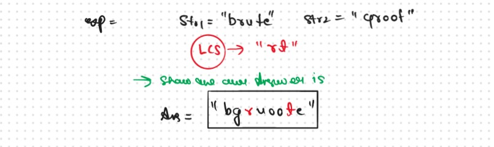
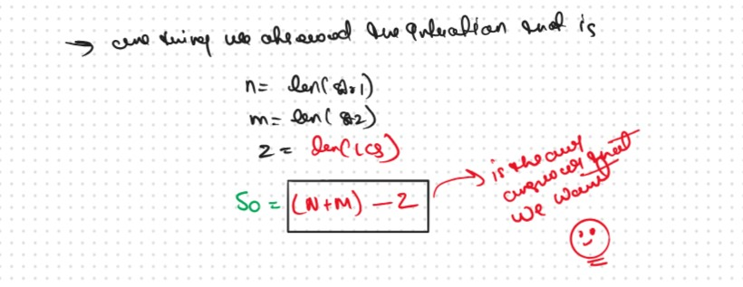
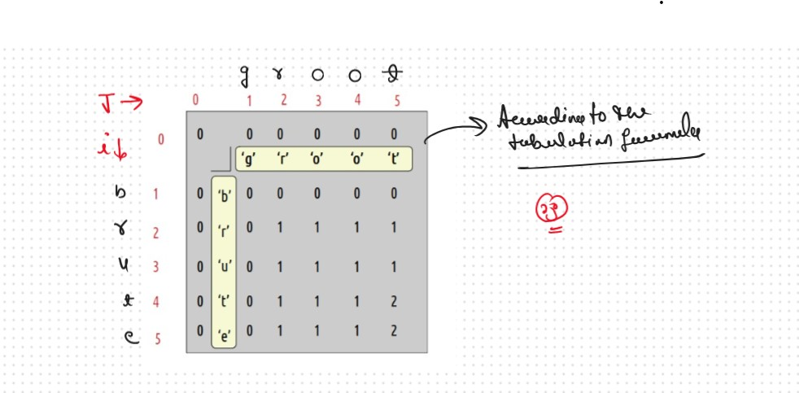
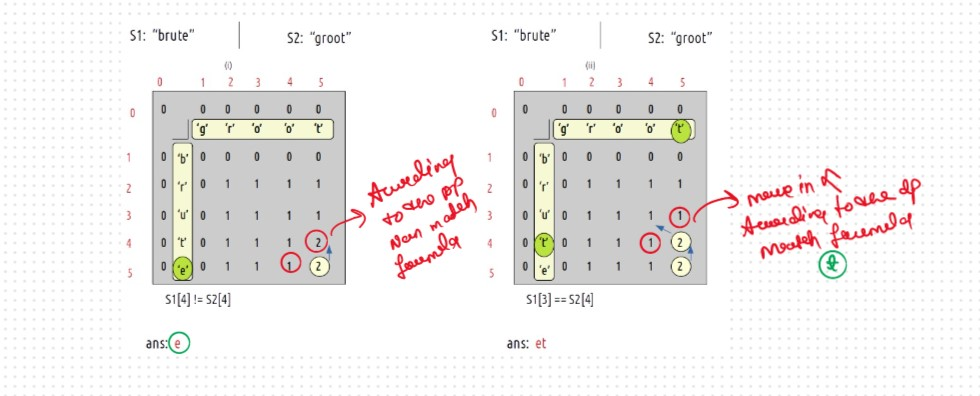
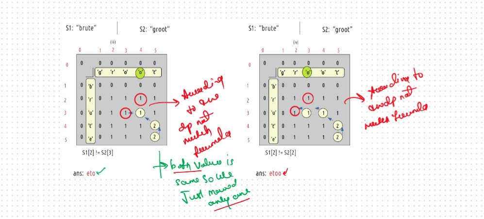
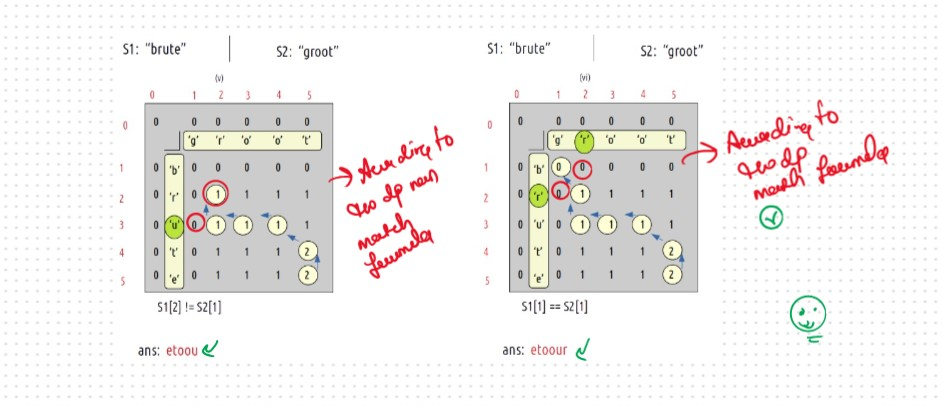
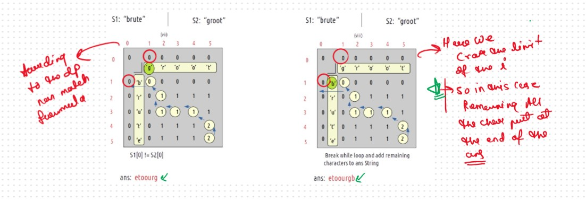

JB TAK FODEGA NHI .... TB TK CHODEGA NHI .... (MAANG)


DPL31 Shortest Common Supersequence
We are given two strings ‘S1’ and ‘S2’. We need to return their shortest common supersequence. A supersequence is defined as the string which contains both the strings S1 and S2 as subsequences
What is the Meaning of the Shortest Common Supersequence?
It's Stae that you have a str1 and str2 and your task is making the Singhe Shortest String that contains the both String str1 and str2 that is the
defination of the Shortest Common Supersequence
Maintain the Order of the character not change the order of the character
Again thsi Question Based on the DPL25 and DPL26 with a Small Modification only need to Identify the Pattern
Intuition
If we think a little, there are some common characters that we can avoid writing for both the strings separately. These common characters can’t be all the common characters. They are the characters that are common and come in the same order. In other words, they are the characters of the longest common subsequence.

if we observer something then we used the Common char with Same Order once and then used the Remaining char of the both String, So this is Nothing but longest common subsequence So we can say that.
So the our Shortest Common Supersequence answer is the nothing but (n+m) - z
.png)
.png)
Sb Mai He Kru ...
Khud Bhi Kr le Khuch ..... Nalayk
Now Time to Print the Shortest Common Supersequence, Remaining Concept and Logic Will Be Same As We Follow in the DPL26 Only here we updaet the Some Condtion According to the Question let's See
When we form the DP table to calculate as we do in longest Common Subsequence (as well as in Print Longest Common Subsequence) 
Approach
How to Approch this Allogrithm and Implement
This is the Majore change in this Question that we not do in the DPL26 that is
Let's Dry Run and Understand the Concept Behind the Logic
At starting i=5 and j=5
VVVVV Imp Point



Tabulation Approch
Similer As DPL25 Tabulation is a ‘bottom-up’ approach where we start from the base case and reach the final answer that we want and Memoization is the Top-down Approch.In Tabulation Approch We Just Creat a DP Array Same as Memoization and Simply Convert the Recurance Relation into the form of the Looping
Steps to convert Recursive Solution to Tabulation one.
.png)
.png)
Sb Mai He Kru ...
Khud Bhi Kr le Khuch ..... Nalayk
Time & Space Complexity
Time Complexity: O(N*M)Reason:There are 2 nested loops
Space Complexity: O(N*M)
Reason: We are using an external array of size ‘(N*M)’. Stack Space is eliminated.